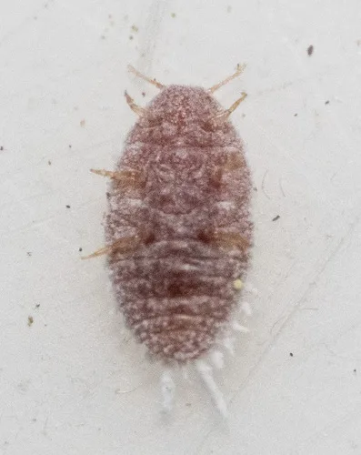

Plant pests
 Caterpillars chewing foliage
Caterpillars chewing foliage
 Pear-shaped insects on shoots
Pear-shaped insects on shoots
 Shell-like bumps on stems or leaves
Shell-like bumps on stems or leaves
 Oval beetles and chewed leaves
Oval beetles and chewed leaves

Cottony insects in leaf joints Tiny mites and fine webbing
Tiny mites and fine webbing
 Longhorn beetles and holes in wood
Longhorn beetles and holes in wood
 Snails and slime trails
Snails and slime trails
 Snouted beetles and notched leaf edges
Snouted beetles and notched leaf edges
 Slender insects on buds and leaves
Slender insects on buds and leaves
 Lace-winged bugs and pale stippling
Lace-winged bugs and pale stippling
 Wedge-shaped jumping insects
Wedge-shaped jumping insects